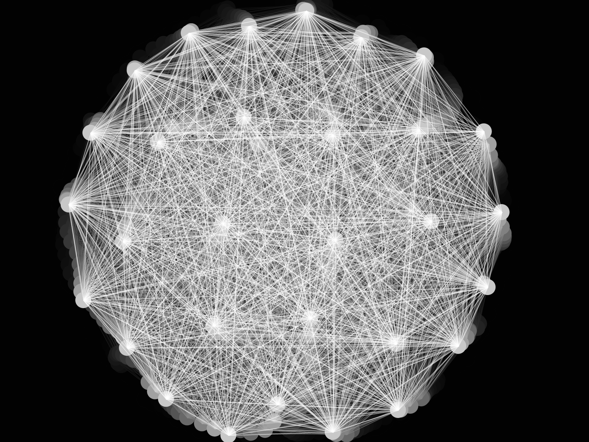
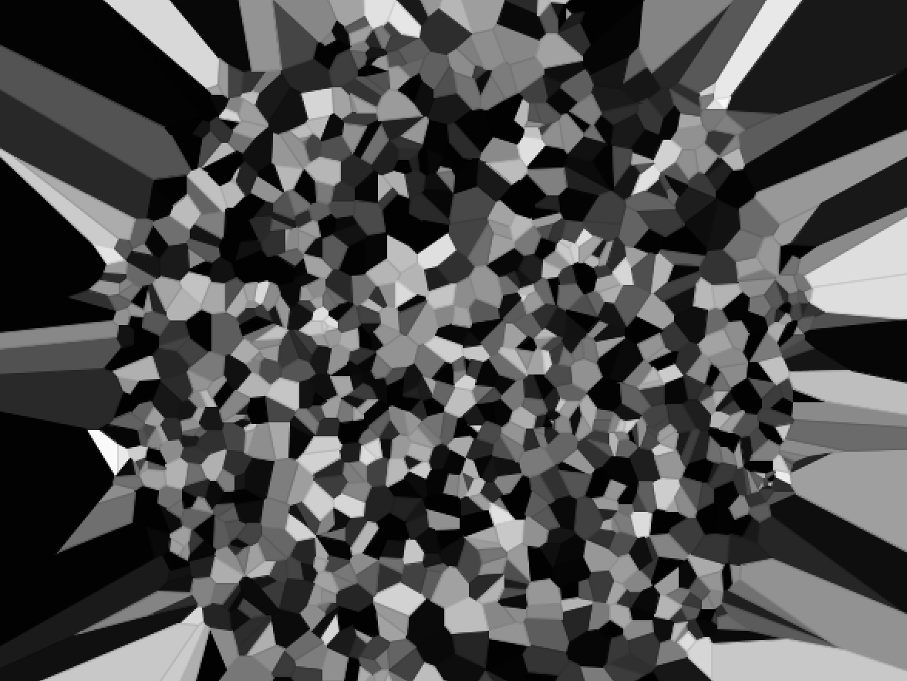

Ondina Frate
Ondina Frate


NYU ITP Spring Show 2016
Using video, the sketch captures the user's portrait in a distorted Voronoi mirror. The sketch moves and creates a new Voronoi diagram every time the user moves.